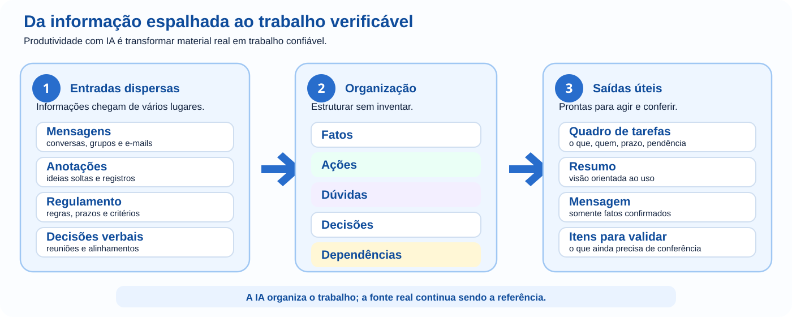

É fim de tarde e a equipe que organiza a Feira de Projetos tenta descobrir o que ainda falta. Há decisões no grupo de mensagens, anotações de uma reunião, um regulamento em PDF e tarefas que alguém prometeu fazer verbalmente. Todo mundo trabalhou, mas ninguém consegue responder com segurança: o que já está decidido, o que ainda depende de alguém e o que pode bloquear o evento?
É aqui que a IA pode ajudar — não como uma máquina de “produzir texto”, mas como apoio para transformar material real em trabalho utilizável. Neste módulo, você acompanhará essa organização avançar: fonte → separação do que sabemos → ações → dependências → comunicação → conferência.
Em Comunicação com IA você aprendeu a fornecer contexto, trabalhar com referências, corrigir o rumo e validar respostas. Agora essas habilidades serão usadas dentro de um fluxo de trabalho real, no qual uma decisão errada pode virar atraso, retrabalho ou informação enviada para a pessoa errada.
Produtividade não é gerar mais conteúdo. É reduzir confusão, retrabalho e incerteza sem transformar lacunas em fatos inventados.
Serve para compreender ou comparar. Não copie nem execute a menos que a própria etapa peça.
É uma ação sua. Quando houver botão Copiar, aquele conteúdo foi preparado para ser levado à conversa com a IA.
Envie somente quando a etapa mandar. Alguns prompts dependem do material enviado na etapa anterior; por isso, mantenha a mesma conversa quando indicado.
Antes de seguir, compare a resposta com a fonte. Se a IA inventou nome, prazo, decisão ou responsabilidade, corrija o processo antes de avançar.

Na reunião da feira, alguém diz: “junta tudo e pede para a IA organizar”. Antes disso, surge uma pergunta mais importante: organizar para quê? A coordenação precisa enxergar pendências; quem executa precisa saber tarefas; participantes precisam receber apenas orientações confirmadas.
Pode nascer um texto bonito que não ajuda ninguém a agir.
Agora sabemos o que deve existir ao final e podemos verificar se a resposta serve.
Antes de pedir qualquer organização à IA, responda: depois que eu receber essa resposta, o que conseguirei fazer que hoje ainda não consigo?
A equipe reúne o que realmente foi registrado. Não são dados perfeitos; são anotações como aparecem no trabalho cotidiano.
Abra uma nova conversa em uma IA de texto. Copie as anotações abaixo e cole na caixa de mensagem, mas ainda não envie.
Se a IA não receber esse material, terá de preencher lacunas. O primeiro ganho de produtividade, portanto, não é escrever: é parar de adivinhar.
Compare linha por linha com as anotações. Se aparecer nome, prazo ou decisão que não estava nelas, a organização já começou contaminada.
“Laboratório 2 reservado” e “verificar extensão elétrica” parecem apenas duas linhas, mas exigem comportamentos diferentes. A primeira informa algo já confirmado; a segunda precisa provocar uma ação.
Antes de seguir, classifique com suas palavras a frase “abertura prevista para 19h, mas falta confirmação da direção”. Depois confira: 19h é uma previsão, não um horário final; a confirmação da direção continua pendente.
Depois de separar o material, a pergunta da equipe muda: o que precisa acontecer agora?
A tabela abaixo é uma referência para conferência, não algo para copiar ou executar.
| Tarefa | Responsável | Prazo | Situação |
|---|---|---|---|
| Preparar etiquetas | Marina | Não definido | Responsável confirmado |
| Testar projetor | João | Até quarta-feira | Confirmado nas anotações |
| Verificar extensão elétrica | Não definido | Não definido | Pendência aberta |
| Imprimir certificados | Não definido | Não definido | Precisa de responsável |
A tabela produzida pela IA preservou essas lacunas ou tentou “completar” campos? Ela pode organizar de forma diferente da referência, mas não pode inventar dados. Uma tabela parece oficial; por isso um dado inventado pode ficar mais convincente justamente por estar organizado.
A equipe já sabe o que está confirmado. Agora surgem três pedidos quase ao mesmo tempo: a direção quer um resumo, a equipe quer pendências e os participantes querem horário e local. Ser produtivo não significa criar três versões independentes e correr o risco de cada uma contar uma história diferente.
Decisões, riscos e itens que precisam de aprovação.
Tarefas, responsáveis, prazos e pendências.
Somente orientações já confirmadas.
A mensagem para a equipe deve reutilizar os mesmos fatos da fonte. Um item incerto não pode virar informação confirmada só porque o público mudou.
No dia seguinte chega um documento de três páginas com orientações para uma atividade externa ligada à feira. Um aluno quer saber o que levar; a coordenação precisa saber horários, responsabilidades e impedimentos. Ambos pedem “um resumo”, mas precisam tomar decisões diferentes.
Nesta etapa não há um documento para anexar. O objetivo é perceber por que “resuma o documento” é insuficiente quando pessoas diferentes precisam agir sobre o mesmo material.
Pode ficar curto e apagar justamente o que muda uma ação.
Se uma informação removida do resumo puder fazer alguém perder horário, documento ou autorização, ela provavelmente não era detalhe.
Com material, tarefas e público definidos, alguém propõe: “peça para a IA ler tudo, montar o plano, escrever as mensagens e entregar a versão final”. Parece mais rápido. Mas, se o resultado trouxer um horário errado, fica difícil descobrir se o problema surgiu na leitura da fonte, na organização ou na escrita.
Você já executou uma extração semelhante no tópico 2. Não precisa repeti-la agora. Observe a estratégia: uma tarefa grande é dividida em uma etapa que pode ser conferida antes da seguinte.
Cada etapa vira um ponto de controle. Você consegue localizar o erro antes que ele seja carregado para o restante do fluxo.
A coordenação recebe uma versão nova do regulamento. Para tornar a ideia testável sem depender de um PDF externo, use os dois trechos fictícios abaixo.
Abra uma nova conversa. Copie as duas versões abaixo e cole na caixa de mensagem, mas ainda não envie.
A IA deve localizar pelo menos a mudança de horário e a mudança de responsabilidade sobre as extensões. Qualquer “impacto provável” precisa continuar distinguido do que os trechos realmente afirmam. Em documento real, volte sempre aos trechos originais antes de agir.
Os certificados aparecem no quadro como “a fazer”. Só que a lista final de participantes ainda não chegou. Nesse momento, a equipe percebe que uma lista de tarefas não mostra necessariamente o que depende do quê.
A confirmação da lista final precisa aparecer antes da revisão dos nomes e da impressão. Se a IA tratar todas as tarefas como independentes, ela não identificou o bloqueio principal.
Prioridade deixa de ser “o que parece urgente” e passa a considerar o que destrava o restante do trabalho.
Toda semana alguém volta a separar decisões, tarefas, responsáveis e dúvidas. Esse é o momento em que vale transformar um processo compreendido em um modelo reutilizável — sem reaproveitar dados antigos.
O valor do modelo está na estrutura de trabalho que funcionou. Cada nova reunião continua precisando de material e contexto atualizados.
Para descobrir quantos alunos confirmaram presença, alguém pensa em enviar a planilha inteira. Ela também contém nome completo, telefone, e-mail, documento e observações internas. De repente, o problema deixa de ser “como analisar rápido?” e passa a incluir o que realmente precisa ser compartilhado.
Por que este dado precisa estar aqui? Se ele não muda a tarefa, retire-o.
A equipe da Feira de Projetos está prestes a distribuir uma mensagem para famílias e participantes. A abertura aparece como 19h, mas a própria anotação original dizia que esse horário ainda aguardava confirmação da direção. Uma resposta da IA pode estar perfeitamente escrita e, ainda assim, transformar uma previsão em informação oficial.
Nomes, datas, valores e decisões aparecem na fonte?
O que ainda está pendente ficou visível?
O destinatário recebe somente o que precisa?
Alguma informação ainda depende de uma decisão humana?
Volte à conversa usada nos tópicos 2 a 5 e aplique o prompt abaixo à mensagem para a equipe que você produziu.
O horário de 19h deve continuar marcado como pendente de confirmação da direção. Se a revisão o apresentar como horário oficial, o fluxo ainda não está seguro.
O fluxo não termina quando a IA produz. Termina quando o resultado está pronto para ser usado com segurança.
Agora mude de contexto. Uma turma fará uma visita técnica e as informações chegaram em momentos diferentes. O objetivo é verificar se você aprendeu o processo, e não apenas a história da feira.
Copie as anotações abaixo e cole na caixa de mensagem, mas ainda não envie. Em seguida, copie a Etapa A, cole logo abaixo das anotações e envie as duas partes juntas.
PARE E CONFIRA: procure pessoa, horário, prazo ou responsabilidade que não apareça nas anotações. A saída às 7h30 ainda não pode ser tratada como confirmada.
PARE E CONFIRA: o plano precisa manter a confirmação do transporte como pendência e não pode inventar responsável pelo kit.
PARE E CONFIRA: decida você mesmo se a mensagem já pode ser enviada e justifique usando as evidências do material. O próprio enunciado informa que a mensagem final só deve sair depois da confirmação do transporte e dos horários.
A qualidade veio da sequência fonte → extração → conferência → organização → comunicação → validação, não de uma frase mágica.
Escolha um problema pequeno e real: preparação de aula, reunião, estudo, evento, projeto, documento ou lista de tarefas. Não comece pela ferramenta.
Se houver nomes, contatos, documentos, credenciais, observações internas ou outros dados pessoais que não sejam necessários para a tarefa, remova ou anonimize antes de usar a IA. Se o dado for necessário e envolver terceiros, respeite as regras da instituição e do serviço utilizado.
Ao terminar, mostre onde a IA economizou trabalho, qual erro ela poderia ter introduzido e qual decisão continuou sendo sua.